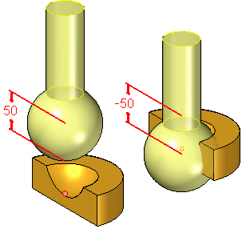

Using the Connect command bar
The Connect command bar has the same features as the Assemble command bar when a Connect relationship type is selected. For more information, see Assemble command bar.
Access the Connect command bar (Home tab→Assemble group→Connect) to apply an Connect relationship between two parts already in the assembly workspace. The Assemble command bar for a Connect relationship is displayed when a new part is dragged into the assembly workspace from the Parts Library and the Connect relationship type is selected (for more information, see Apply a Connect relationship).
The command bars have the following features:
- Occurrence Properties
-
Opens the Occurrence Properties dialog box. For more information, see the Occurrence Properties command This option is only available after a part is selected.
- Construction Display
-
This option is only displayed when a part is selected. When visible, this option opens the Construction Display dialog box that is used to show or hide the selected reference elements for the part. The visible reference elements (the ones that have been turned on) can then be selected to form the Connect relationship. The reference items include:
-
show/hide coordinate systems
-
show/hide reference planes
-
show/hide sketches
-
show/hide references axes
-
show/hide construction surfaces
-
show/hide construction curves
-
use designed or simplified part
-
- Relationship List
-
On the Connect command bar, the identifier for the next relationship to be formed is displayed. This value is for reference only and cannot be changed. On the Assemble command bar, the identifier for the next relationship to be formed is also displayed, but any previously defined relationships are displayed in the list and can be selected. This allows previously defined relationships to be modified directly from the Assemble command bar.
- Relationship Type
-
On the Connect command bar, this option is locked and cannot be changed. On the Assemble command bar the type of relation to be formed can be selected from the list. Changing the relationship type from Connect to some other relationship type also changes the options that appear on the command bar.
- Command Bar Options
-
Opens the Assemble command bar Options dialog box.
- Placement Part
-
Specifies which part is to be positioned in the assembly. This button is active when adding a relationship to a part that already exists in the assembly, or when placing a subassembly. This button is inactive when placing a new part in an assembly as the new part that is dragged into the assembly workspace is automatically selected as the placement part.
- Placement Part Element
-
Specifies which element is to be used on the part being positioned in the assembly.
- Target Part
-
Specifies the target part to be used to form the relationship.
- Target Part Element
-
Specifies the target element to be used to form the relationship.
- OK
-
Orients the part in the assembly using the relationship that has just been defined.
- Offset Value
-
Use this field to enter an offset value to be applied to the Connect relationship. Zero, positive, or negative values can be entered.
- Fixed
-
When a fixed offset is defined, the value for the offset distance (the fixed distance between the selected faces) is specified. If the offset value is set to zero, the faces are coplanar. When this option is selected, enter the offset value or zero into the adjacent Offset Value box. You can enter a negative value. For additional information, see Modify the offset value for a relationship.
- Float
-
When a floating offset is defined, another applied relationship will control the offset distance. This option is selected when a fixed value is not known or is variable, and the offset is to be determined by some subsequent relationship. When this option is selected, the offset value box is disabled.

- Range
-
When a range option is selected, two offset values are defined to limit the upper and lower limit of the offset values. Movement is limited by the defined range. When this option is selected, two offset value boxes are displayed. The first box is for the minimum range value and the other is for the maximum range value.